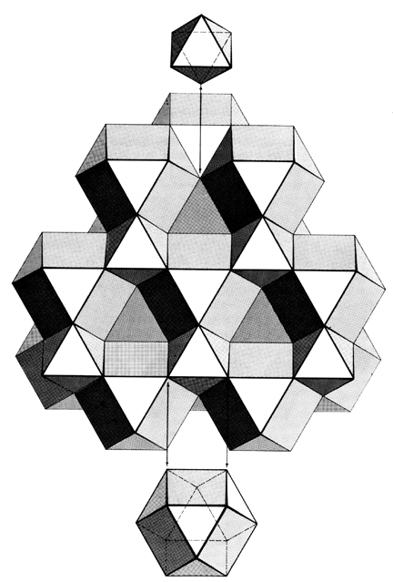

|  |
| Fig. 1032.30 Space Filling of Octahedron and Vector Equilibrium: The packing of concave octahedra, concave vector equilibria, and spherical vector equilibria corresponds exactly to the space filling of planar octahedra and planar vector equilibria. Exactly half of the planar vector equilibria become convex; the other half and all of the planar octahedra become concave. |